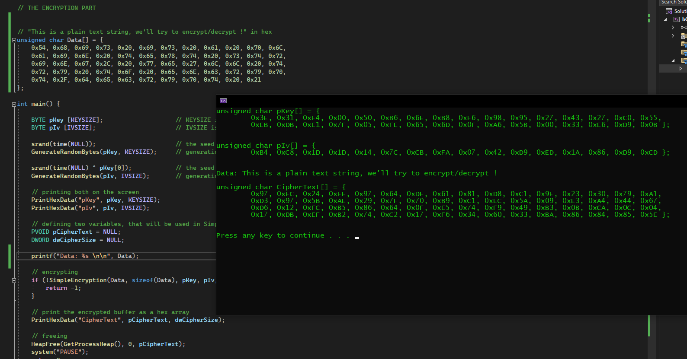
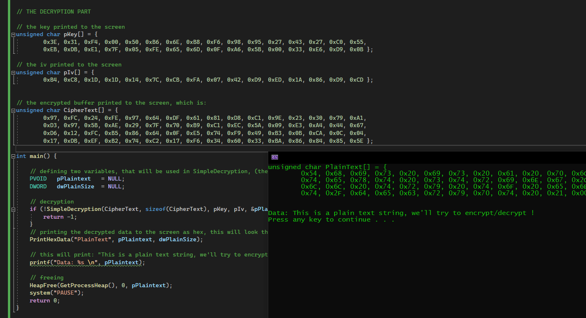
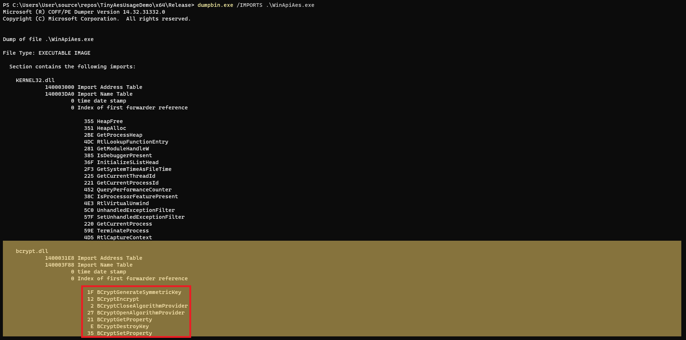
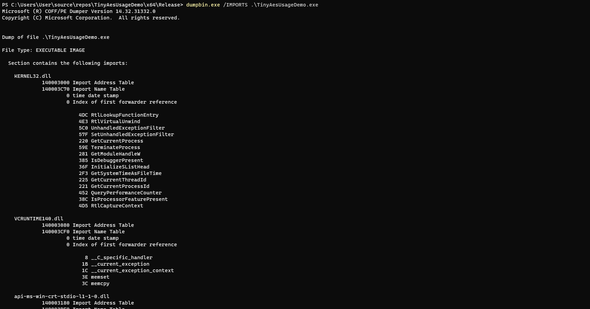

Advanced Encryption Standard
This module discusses a more secure encryption algorithm, Advanced Encryption Standard (AES). It is a symmetric-key algorithm, meaning the same key is used for both encryption and decryption. There are several types of AES encryption such as AES128, AES192, and AES256 that vary by the key size. For example, AES128 uses a 128-bit key whereas AES256 uses a 256-bit key.
Additionally, AES can use different block cipher modes of operation such as CBC and GCM. Depending on the AES mode, the AES algorithm will require an additional component along with the encryption key called an Initialization Vector or IV. Providing an IV provides an additional layer of security to the encryption process.
Regardless of the chosen AES type, AES always requires a 128-bit input and produces a 128-bit output blocks. The important thing to keep in mind is that the input data should be multiples of 16 bytes (128 bits). If the payload being encrypted is not a multiple of 16 bytes then padding is required to increase the size of the payload and make it a multiple of 16 bytes.
The module provides 2 code samples that use AES256-CBC. The first sample is achieved through the bCrypt library which utilizes WinAPIs and the second sample uses Tiny Aes Project. Note that since the AES256-CBC is being used, the code uses a 32-byte key and a 16-byte IV. Again, this would vary if the code used a different AES type or mode.
AES Using WinAPIs (bCrypt Library)
There are several ways to implement the AES encryption algorithm. This section utilizes the bCrypt library (bcrypt.h) to perform AES encryption. This section will explain the code which is available for download as usual at the top right of the module box.
AES Structure
To start, an AES structure is created which contains the required data to perform encryption and decryption.
typedef struct _AES {
PBYTE pPlainText; // base address of the plain text data
DWORD dwPlainSize; // size of the plain text data
PBYTE pCipherText; // base address of the encrypted data
DWORD dwCipherSize; // size of it (this can change from dwPlainSize in case there was padding)
PBYTE pKey; // the 32 byte key
PBYTE pIv; // the 16 byte iv
} AES, *PAES;SimpleEncryption Wrapper
The SimpleEncryption function has six parameters that are used to initialize the AES structure. Once the structure is initialized, the function will call InstallAesEncryption to perform the AES encryption process. Note that two of its parameters are OUT parameters, therefore the function returns the following:
pCipherTextData - A pointer to the newly allocated heap buffer which contains the ciphertext data.sCipherTextSize - The size of the ciphertext buffer.The function returns TRUE if the InstallAesEncryption succeeds, otherwise FALSE.
// Wrapper function for InstallAesEncryption that makes things easier
BOOL SimpleEncryption(IN PVOID pPlainTextData, IN DWORD sPlainTextSize, IN PBYTE pKey, IN PBYTE pIv, OUT PVOID* pCipherTextData, OUT DWORD* sCipherTextSize) {
if (pPlainTextData == NULL || sPlainTextSize == NULL || pKey == NULL || pIv == NULL)
return FALSE;
// Intializing the struct
AES Aes = {
.pKey = pKey,
.pIv = pIv,
.pPlainText = pPlainTextData,
.dwPlainSize = sPlainTextSize
};
if (!InstallAesEncryption(&Aes)) {
return FALSE;
}
// Saving output
*pCipherTextData = Aes.pCipherText;
*sCipherTextSize = Aes.dwCipherSize;
return TRUE;
}SimpleDecryption Wrapper
The SimpleDecryption function also has six parameters and behaves similarly to SimpleEncryption with the difference being that it calls the InstallAesDecryption function and it returns two different values.
pPlainTextData - A pointer to the newly allocated heap buffer which contains the plaintext data.sPlainTextSize - The size of the plaintext buffer.The function returns TRUE if the InstallAesDecryption succeeds, otherwise FALSE.
// Wrapper function for InstallAesDecryption that make things easier
BOOL SimpleDecryption(IN PVOID pCipherTextData, IN DWORD sCipherTextSize, IN PBYTE pKey, IN PBYTE pIv, OUT PVOID* pPlainTextData, OUT DWORD* sPlainTextSize) {
if (pCipherTextData == NULL || sCipherTextSize == NULL || pKey == NULL || pIv == NULL)
return FALSE;
// Intializing the struct
AES Aes = {
.pKey = pKey,
.pIv = pIv,
.pCipherText = pCipherTextData,
.dwCipherSize = sCipherTextSize
};
if (!InstallAesDecryption(&Aes)) {
return FALSE;
}
// Saving output
*pPlainTextData = Aes.pPlainText;
*sPlainTextSize = Aes.dwPlainSize;
return TRUE;
}Cryptographic Next Generation
Cryptographic Next Generation (CNG) provides a set of cryptographic functions that can be used by applications of the OS. CNG provides a standardized interface for cryptographic operations, making it easier for developers to implement security features in their applications. Both InstallAesEncryption and InstallAesDecryption functions make use of CNG.
More information about CNG is available here.
InstallAesEncryption Function
The InstallAesEncryption is the function that performs AES encryption. The function has one parameter, PAES, which is a pointer to a populated AES structure. The bCrypt library functions used in the function are shown below.
BCRYPT_OBJECT_LENGTH property identifier.BCryptGenerateSymmetricKey.BCryptOpenAlgorithmProvider.The function returns TRUE if it successfully encrypts the payload, otherwise FALSE.
// The encryption implementation
BOOL InstallAesEncryption(PAES pAes) {
BOOL bSTATE = TRUE;
BCRYPT_ALG_HANDLE hAlgorithm = NULL;
BCRYPT_KEY_HANDLE hKeyHandle = NULL;
ULONG cbResult = NULL;
DWORD dwBlockSize = NULL;
DWORD cbKeyObject = NULL;
PBYTE pbKeyObject = NULL;
PBYTE pbCipherText = NULL;
DWORD cbCipherText = NULL,
// Intializing "hAlgorithm" as AES algorithm Handle
STATUS = BCryptOpenAlgorithmProvider(&hAlgorithm, BCRYPT_AES_ALGORITHM, NULL, 0);
if (!NT_SUCCESS(STATUS)) {
printf("[!] BCryptOpenAlgorithmProvider Failed With Error: 0x%0.8X \n", STATUS);
bSTATE = FALSE; goto _EndOfFunc;
}
// Getting the size of the key object variable pbKeyObject. This is used by the BCryptGenerateSymmetricKey function later
STATUS = BCryptGetProperty(hAlgorithm, BCRYPT_OBJECT_LENGTH, (PBYTE)&cbKeyObject, sizeof(DWORD), &cbResult, 0);
if (!NT_SUCCESS(STATUS)) {
printf("[!] BCryptGetProperty[1] Failed With Error: 0x%0.8X \n", STATUS);
bSTATE = FALSE; goto _EndOfFunc;
}
// Getting the size of the block used in the encryption. Since this is AES it must be 16 bytes.
STATUS = BCryptGetProperty(hAlgorithm, BCRYPT_BLOCK_LENGTH, (PBYTE)&dwBlockSize, sizeof(DWORD), &cbResult, 0);
if (!NT_SUCCESS(STATUS)) {
printf("[!] BCryptGetProperty[2] Failed With Error: 0x%0.8X \n", STATUS);
bSTATE = FALSE; goto _EndOfFunc;
}
// Checking if block size is 16 bytes
if (dwBlockSize != 16) {
bSTATE = FALSE; goto _EndOfFunc;
}
// Allocating memory for the key object
pbKeyObject = (PBYTE)HeapAlloc(GetProcessHeap(), 0, cbKeyObject);
if (pbKeyObject == NULL) {
bSTATE = FALSE; goto _EndOfFunc;
}
// Setting Block Cipher Mode to CBC. This uses a 32 byte key and a 16 byte IV.
STATUS = BCryptSetProperty(hAlgorithm, BCRYPT_CHAINING_MODE, (PBYTE)BCRYPT_CHAIN_MODE_CBC, sizeof(BCRYPT_CHAIN_MODE_CBC), 0);
if (!NT_SUCCESS(STATUS)) {
printf("[!] BCryptSetProperty Failed With Error: 0x%0.8X \n", STATUS);
bSTATE = FALSE; goto _EndOfFunc;
}
// Generating the key object from the AES key "pAes->pKey". The output will be saved in pbKeyObject and will be of size cbKeyObject
STATUS = BCryptGenerateSymmetricKey(hAlgorithm, &hKeyHandle, pbKeyObject, cbKeyObject, (PBYTE)pAes->pKey, KEYSIZE, 0);
if (!NT_SUCCESS(STATUS)) {
printf("[!] BCryptGenerateSymmetricKey Failed With Error: 0x%0.8X \n", STATUS);
bSTATE = FALSE; goto _EndOfFunc;
}
// Running BCryptEncrypt first time with NULL output parameters to retrieve the size of the output buffer which is saved in cbCipherText
STATUS = BCryptEncrypt(hKeyHandle, (PUCHAR)pAes->pPlainText, (ULONG)pAes->dwPlainSize, NULL, pAes->pIv, IVSIZE, NULL, 0, &cbCipherText, BCRYPT_BLOCK_PADDING);
if (!NT_SUCCESS(STATUS)) {
printf("[!] BCryptEncrypt[1] Failed With Error: 0x%0.8X \n", STATUS);
bSTATE = FALSE; goto _EndOfFunc;
}
// Allocating enough memory for the output buffer, cbCipherText
pbCipherText = (PBYTE)HeapAlloc(GetProcessHeap(), 0, cbCipherText);
if (pbCipherText == NULL) {
bSTATE = FALSE; goto _EndOfFunc;
}
// Running BCryptEncrypt again with pbCipherText as the output buffer
STATUS = BCryptEncrypt(hKeyHandle, (PUCHAR)pAes->pPlainText, (ULONG)pAes->dwPlainSize, NULL, pAes->pIv, IVSIZE, pbCipherText, cbCipherText, &cbResult, BCRYPT_BLOCK_PADDING);
if (!NT_SUCCESS(STATUS)) {
printf("[!] BCryptEncrypt[2] Failed With Error: 0x%0.8X \n", STATUS);
bSTATE = FALSE; goto _EndOfFunc;
}
// Clean up
_EndOfFunc:
if (hKeyHandle)
BCryptDestroyKey(hKeyHandle);
if (hAlgorithm)
BCryptCloseAlgorithmProvider(hAlgorithm, 0);
if (pbKeyObject)
HeapFree(GetProcessHeap(), 0, pbKeyObject);
if (pbCipherText != NULL && bSTATE) {
// If everything worked, save pbCipherText and cbCipherText
pAes->pCipherText = pbCipherText;
pAes->dwCipherSize = cbCipherText;
}
return bSTATE;
}InstallAesDecryption Function
The InstallAesDecryption is the function that performs AES decryption. The function has one parameter, PAES, which is a pointer to a populated AES structure. The bCrypt library functions used in the function are the same as in the InstallAesEncryption function above, with the only difference being that BCryptDecrypt is used instead of BCryptEncrypt.
The function returns TRUE if it successfully decrypts the payload, otherwise FALSE.
// The decryption implementation
BOOL InstallAesDecryption(PAES pAes) {
BOOL bSTATE = TRUE;
BCRYPT_ALG_HANDLE hAlgorithm = NULL;
BCRYPT_KEY_HANDLE hKeyHandle = NULL;
ULONG cbResult = NULL;
DWORD dwBlockSize = NULL;
DWORD cbKeyObject = NULL;
PBYTE pbKeyObject = NULL;
PBYTE pbPlainText = NULL;
DWORD cbPlainText = NULL,
// Intializing "hAlgorithm" as AES algorithm Handle
STATUS = BCryptOpenAlgorithmProvider(&hAlgorithm, BCRYPT_AES_ALGORITHM, NULL, 0);
if (!NT_SUCCESS(STATUS)) {
printf("[!] BCryptOpenAlgorithmProvider Failed With Error: 0x%0.8X \n", STATUS);
bSTATE = FALSE; goto _EndOfFunc;
}
// Getting the size of the key object variable pbKeyObject. This is used by the BCryptGenerateSymmetricKey function later
STATUS = BCryptGetProperty(hAlgorithm, BCRYPT_OBJECT_LENGTH, (PBYTE)&cbKeyObject, sizeof(DWORD), &cbResult, 0);
if (!NT_SUCCESS(STATUS)) {
printf("[!] BCryptGetProperty[1] Failed With Error: 0x%0.8X \n", STATUS);
bSTATE = FALSE; goto _EndOfFunc;
}
// Getting the size of the block used in the encryption. Since this is AES it should be 16 bytes.
STATUS = BCryptGetProperty(hAlgorithm, BCRYPT_BLOCK_LENGTH, (PBYTE)&dwBlockSize, sizeof(DWORD), &cbResult, 0);
if (!NT_SUCCESS(STATUS)) {
printf("[!] BCryptGetProperty[2] Failed With Error: 0x%0.8X \n", STATUS);
bSTATE = FALSE; goto _EndOfFunc;
}
// Checking if block size is 16 bytes
if (dwBlockSize != 16) {
bSTATE = FALSE; goto _EndOfFunc;
}
// Allocating memory for the key object
pbKeyObject = (PBYTE)HeapAlloc(GetProcessHeap(), 0, cbKeyObject);
if (pbKeyObject == NULL) {
bSTATE = FALSE; goto _EndOfFunc;
}
// Setting Block Cipher Mode to CBC. This uses a 32 byte key and a 16 byte IV.
STATUS = BCryptSetProperty(hAlgorithm, BCRYPT_CHAINING_MODE, (PBYTE)BCRYPT_CHAIN_MODE_CBC, sizeof(BCRYPT_CHAIN_MODE_CBC), 0);
if (!NT_SUCCESS(STATUS)) {
printf("[!] BCryptSetProperty Failed With Error: 0x%0.8X \n", STATUS);
bSTATE = FALSE; goto _EndOfFunc;
}
// Generating the key object from the AES key "pAes->pKey". The output will be saved in pbKeyObject of size cbKeyObject
STATUS = BCryptGenerateSymmetricKey(hAlgorithm, &hKeyHandle, pbKeyObject, cbKeyObject, (PBYTE)pAes->pKey, KEYSIZE, 0);
if (!NT_SUCCESS(STATUS)) {
printf("[!] BCryptGenerateSymmetricKey Failed With Error: 0x%0.8X \n", STATUS);
bSTATE = FALSE; goto _EndOfFunc;
}
// Running BCryptDecrypt first time with NULL output parameters to retrieve the size of the output buffer which is saved in cbPlainText
STATUS = BCryptDecrypt(hKeyHandle, (PUCHAR)pAes->pCipherText, (ULONG)pAes->dwCipherSize, NULL, pAes->pIv, IVSIZE, NULL, 0, &cbPlainText, BCRYPT_BLOCK_PADDING);
if (!NT_SUCCESS(STATUS)) {
printf("[!] BCryptDecrypt[1] Failed With Error: 0x%0.8X \n", STATUS);
bSTATE = FALSE; goto _EndOfFunc;
}
// Allocating enough memory for the output buffer, cbPlainText
pbPlainText = (PBYTE)HeapAlloc(GetProcessHeap(), 0, cbPlainText);
if (pbPlainText == NULL) {
bSTATE = FALSE; goto _EndOfFunc;
}
// Running BCryptDecrypt again with pbPlainText as the output buffer
STATUS = BCryptDecrypt(hKeyHandle, (PUCHAR)pAes->pCipherText, (ULONG)pAes->dwCipherSize, NULL, pAes->pIv, IVSIZE, pbPlainText, cbPlainText, &cbResult, BCRYPT_BLOCK_PADDING);
if (!NT_SUCCESS(STATUS)) {
printf("[!] BCryptDecrypt[2] Failed With Error: 0x%0.8X \n", STATUS);
bSTATE = FALSE; goto _EndOfFunc;
}
// Clean up
_EndOfFunc:
if (hKeyHandle)
BCryptDestroyKey(hKeyHandle);
if (hAlgorithm)
BCryptCloseAlgorithmProvider(hAlgorithm, 0);
if (pbKeyObject)
HeapFree(GetProcessHeap(), 0, pbKeyObject);
if (pbPlainText != NULL && bSTATE) {
// if everything went well, we save pbPlainText and cbPlainText
pAes->pPlainText = pbPlainText;
pAes->dwPlainSize = cbPlainText;
}
return bSTATE;
}Additional Helper Functions
The code also includes two small helper functions as well, PrintHexData and GenerateRandomBytes.
The first function, PrintHexData, prints an input buffer as a char array in C syntax to the console.
// Print the input buffer as a hex char array
VOID PrintHexData(LPCSTR Name, PBYTE Data, SIZE_T Size) {
printf("unsigned char %s[] = {", Name);
for (int i = 0; i < Size; i++) {
if (i % 16 == 0)
printf("\n\t");
if (i < Size - 1) {
printf("0x%0.2X, ", Data[i]);
else
printf("0x%0.2X ", Data[i]);
}
printf("};\n\n\n");
}The other function, GenerateRandomBytes, fills up an input buffer with random bytes which in this case is used to generate a random key and IV.
// Generate random bytes of size sSize
VOID GenerateRandomBytes(PBYTE pByte, SIZE_T sSize) {
for (int i = 0; i < sSize; i++) {
pByte[i] = (BYTE)rand() % 0xFF;
}
}Padding
Both InstallAesEncryption and InstallAesDecryption functions use the BCRYPT_BLOCK_PADDING flag with the BCryptEncrypt and BCryptDecrypt bcrypt functions respectively, which will automatically pad the input buffer, if required, to be a multiple of 16 bytes, solving the AES padding issue.
Main Function - Encryption
The main function below is used to perform the encryption routine on an array of plaintext data.
// The plaintext, in hex format, that will be encrypted
// this is the following string in hex "This is a plain text string, we'll try to encrypt/decrypt !"
unsigned char Data[] = {
0x54, 0x68, 0x69, 0x73, 0x20, 0x69, 0x73, 0x20, 0x61, 0x20, 0x70, 0x6C,
0x61, 0x69, 0x6E, 0x20, 0x74, 0x65, 0x78, 0x74, 0x20, 0x73, 0x74, 0x72,
0x69, 0x6E, 0x67, 0x2C, 0x20, 0x77, 0x65, 0x27, 0x6C, 0x6C, 0x20, 0x74,
0x72, 0x79, 0x20, 0x74, 0x6F, 0x20, 0x65, 0x6E, 0x63, 0x72, 0x79, 0x70,
0x74, 0x2F, 0x64, 0x65, 0x63, 0x72, 0x79, 0x70, 0x74, 0x20, 0x21
};
int main() {
BYTE pKey [KEYSIZE]; // KEYSIZE is 32 bytes
BYTE pIv [IVSIZE]; // IVSIZE is 16 bytes
srand(time(NULL)); // The seed to generate the key. This is used to further randomize the key.
GenerateRandomBytes(pKey, KEYSIZE); // Generating a key with the helper function
srand(time(NULL) ^ pKey[0]); // The seed to generate the IV. Use the first byte of the key to add more randomness.
GenerateRandomBytes(pIv, IVSIZE); // Generating the IV with the helper function
// Printing both key and IV onto the console
PrintHexData("pKey", pKey, KEYSIZE);
PrintHexData("pIv", pIv, IVSIZE);
// Defining two variables the output buffer and its respective size which will be used in SimpleEncryption
PVOID pCipherText = NULL;
DWORD dwCipherSize = NULL;
// Encrypting
if (!SimpleEncryption(Data, sizeof(Data), pKey, pIv, &pCipherText, &dwCipherSize)) {
return -1;
}
// Print the encrypted buffer as a hex array
PrintHexData("CipherText", pCipherText, dwCipherSize);
// Clean up
HeapFree(GetProcessHeap(), 0, pCipherText);
system("PAUSE");
return 0;
}
Main Function - Decryption
The main function below is used to perform the decryption routine. The decryption routine requires the decryption key, IV and ciphertext.
// the key printed to the screen
unsigned char pKey[] = {
0x3E, 0x31, 0xF4, 0x00, 0x50, 0xB6, 0x6E, 0xB8, 0xF6, 0x98, 0x95, 0x27, 0x43, 0x27, 0xC0, 0x55,
0xEB, 0xDB, 0xE1, 0x7F, 0x05, 0xFE, 0x65, 0x6D, 0x0F, 0xA6, 0x5B, 0x00, 0x33, 0xE6, 0xD9, 0x0B };
// the iv printed to the screen
unsigned char pIv[] = {
0xB4, 0xC8, 0x1D, 0x1D, 0x14, 0x7C, 0xCB, 0xFA, 0x07, 0x42, 0xD9, 0xED, 0x1A, 0x86, 0xD9, 0xCD };
// the encrypted buffer printed to the screen, which is:
unsigned char CipherText[] = {
0x97, 0xFC, 0x24, 0xFE, 0x97, 0x64, 0xDF, 0x61, 0x81, 0xD8, 0xC1, 0x9E, 0x23, 0x30, 0x79, 0xA1,
0xD3, 0x97, 0x5B, 0xAE, 0x29, 0x7F, 0x70, 0xB9, 0xC1, 0xEC, 0x5A, 0x09, 0xE3, 0xA4, 0x44, 0x67,
0xD6, 0x12, 0xFC, 0xB5, 0x86, 0x64, 0x0F, 0xE5, 0x74, 0xF9, 0x49, 0xB3, 0x0B, 0xCA, 0x0C, 0x04,
0x17, 0xDB, 0xEF, 0xB2, 0x74, 0xC2, 0x17, 0xF6, 0x34, 0x60, 0x33, 0xBA, 0x86, 0x84, 0x85, 0x5E };
int main() {
// Defining two variables the output buffer and its respective size which will be used in SimpleDecryption
PVOID pPlaintext = NULL;
DWORD dwPlainSize = NULL;
// Decrypting
if (!SimpleDecryption(CipherText, sizeof(CipherText), pKey, pIv, &pPlaintext, &dwPlainSize)) {
return -1;
}
// Printing the decrypted data to the screen in hex format
PrintHexData("PlainText", pPlaintext, dwPlainSize);
// this will print: "This is a plain text string, we'll try to encrypt/decrypt !"
printf("Data: %s \n", pPlaintext);
// Clean up
HeapFree(GetProcessHeap(), 0, pPlaintext);
system("PAUSE");
return 0;
}
bCrypt Library Drawbacks
One of the primary drawbacks of using the method outlined above to implement AES encryption is that the usage of the cryptographic WinAPIs results in them being visible in the binary's Import Address Table (IAT). Security solutions can detect the use of cryptographic functions by scanning the IAT, which can potentially indicate malicious behavior or raise suspicion. Hiding WinAPIs in the IAT is possible and will be discussed in a future module.
The image below shows the IAT of the binary using Windows APIs for AES encryption. The usage of the crypt.dll library and the cryptographic functions is clearly visible.

AES Using Tiny-AES Library
This section makes use of the tiny-AES-c third-party encryption library that performs AES encryption without the use of WinAPIs. Tiny-AES-C is a small portable library that can perform AES128/192/256 in C.
Setting Up Tiny-AES
To begin using Tiny-AES there are two requirements:
aes.hpp (C++) or include aes.h (C) in the project.aes.c file to the project.Tiny-AES Library Drawbacks
Before diving into the code it's important to be aware of the drawbacks of the tiny-AES library.
AES_init_ctx_iv.Custom Padding Function
The lack of padding support can be solved by creating a custom padding function as shown in the code snippet below.
BOOL PaddBuffer(IN PBYTE InputBuffer, IN SIZE_T InputBufferSize, OUT PBYTE* OutputPaddedBuffer, OUT SIZE_T* OutputPaddedSize) {
PBYTE PaddedBuffer = NULL;
SIZE_T PaddedSize = NULL;
// calculate the nearest number that is multiple of 16 and saving it to PaddedSize
PaddedSize = InputBufferSize + 16 - (InputBufferSize % 16);
// allocating buffer of size "PaddedSize"
PaddedBuffer = (PBYTE)HeapAlloc(GetProcessHeap(), 0, PaddedSize);
if (!PaddedBuffer){
return FALSE;
}
// cleaning the allocated buffer
ZeroMemory(PaddedBuffer, PaddedSize);
// copying old buffer to new padded buffer
memcpy(PaddedBuffer, InputBuffer, InputBufferSize);
//saving results :
*OutputPaddedBuffer = PaddedBuffer;
*OutputPaddedSize = PaddedSize;
return TRUE;
}Tiny-AES Encryption
Similar to how the bCrypt library's encryption and decryption process was explained earlier in the module, the snippets below explain Tiny-AES's encryption and decryption process.
#include <Windows.h>#include <stdio.h>#include "aes.h"// "this is plaintext string, we'll try to encrypt... lets hope everything goes well :)" in hex
// since the upper string is 82 byte in size, and 82 is not mulitple of 16, we cant encrypt this directly using tiny-aes
unsigned char Data[] = {
0x74, 0x68, 0x69, 0x73, 0x20, 0x69, 0x73, 0x20, 0x70, 0x6C, 0x61, 0x6E,
0x65, 0x20, 0x74, 0x65, 0x78, 0x74, 0x20, 0x73, 0x74, 0x69, 0x6E, 0x67,
0x2C, 0x20, 0x77, 0x65, 0x27, 0x6C, 0x6C, 0x20, 0x74, 0x72, 0x79, 0x20,
0x74, 0x6F, 0x20, 0x65, 0x6E, 0x63, 0x72, 0x79, 0x70, 0x74, 0x2E, 0x2E,
0x2E, 0x20, 0x6C, 0x65, 0x74, 0x73, 0x20, 0x68, 0x6F, 0x70, 0x65, 0x20,
0x65, 0x76, 0x65, 0x72, 0x79, 0x74, 0x68, 0x69, 0x67, 0x6E, 0x20, 0x67,
0x6F, 0x20, 0x77, 0x65, 0x6C, 0x6C, 0x20, 0x3A, 0x29, 0x00
};
int main() {
// struct needed for Tiny-AES library
struct AES_ctx ctx;
BYTE pKey[KEYSIZE]; // KEYSIZE is 32 bytes
BYTE pIv[IVSIZE; // IVSIZE is 16 bytes
srand(time(NULL)); // the seed to generate the key
GenerateRandomBytes(pKey, KEYSIZE); // generating the key bytes
srand(time(NULL) ^ pKey[0]); // The seed to generate the IV. Use the first byte of the key to add more randomness.
GenerateRandomBytes(pIv, IVSIZE); // Generating the IV
// Prints both key and IV to the console
PrintHexData("pKey", pKey, KEYSIZE);
PrintHexData("pIv", pIv, IVSIZE);
// Initializing the Tiny-AES Library
AES_init_ctx_iv(&ctx, pKey, pIv);
// Initializing variables that will hold the new buffer base address in the case where padding is required and its size
PBYTE PaddedBuffer = NULL;
SIZE_T PAddedSize = NULL;
// Padding the buffer, if required
if (sizeof(Data) % 16 != 0){
PaddBuffer(Data, sizeof(Data), &PaddedBuffer, &PAddedSize);
// Encrypting the padded buffer instead
AES_CBC_encrypt_buffer(&ctx, PaddedBuffer, PAddedSize);
// Printing the encrypted buffer to the console
PrintHexData("CipherText", PaddedBuffer, PAddedSize);
}
// No padding is required, encrypt 'Data' directly
else {
AES_CBC_encrypt_buffer(&ctx, Data, sizeof(Data));
// Printing the encrypted buffer to the console
PrintHexData("CipherText", Data, sizeof(Data));
}
// Freeing PaddedBuffer, if necessary
if (PaddedBuffer != NULL){
HeapFree(GetProcessHeap(), 0, PaddedBuffer);
}
system("PAUSE");
return 0;
}Tiny-AES Decryption
#include <Windows.h>#include <stdio.h>#include "aes.h"// Key
unsigned char pKey[] = {
0xFA, 0x9C, 0x73, 0x6C, 0xF2, 0x3A, 0x47, 0x21, 0x7F, 0xD8, 0xE7, 0x1A, 0x4F, 0x76, 0x1D, 0x84,
0x2C, 0xCB, 0x98, 0xE3, 0xDC, 0x94, 0xEF, 0x04, 0x46, 0x2D, 0xE3, 0x33, 0xD7, 0x5E, 0xE5, 0xAF };
// IV
unsigned char pIv[] = {
0xCF, 0x00, 0x86, 0xE1, 0x6D, 0xA2, 0x6B, 0x06, 0xC4, 0x8B, 0x1F, 0xDA, 0xB6, 0xAB, 0x21, 0xF1 };
// Encrypted data, multiples of 16 bytes
unsigned char CipherText[] = {
0xD8, 0x9C, 0xFE, 0x68, 0x97, 0x71, 0x5E, 0x5E, 0x79, 0x45, 0x3F, 0x05, 0x4B, 0x71, 0xB9, 0x9D,
0xB2, 0xF3, 0x72, 0xEF, 0xC2, 0x64, 0xB2, 0xE8, 0xD8, 0x36, 0x29, 0x2A, 0x66, 0xEB, 0xAB, 0x80,
0xE4, 0xDF, 0xF2, 0x3C, 0xEE, 0x53, 0xCF, 0x21, 0x3A, 0x88, 0x2C, 0x59, 0x8C, 0x85, 0x26, 0x79,
0xF0, 0x04, 0xC2, 0x55, 0xA8, 0xDE, 0xB4, 0x50, 0xEE, 0x00, 0x65, 0xF8, 0xEE, 0x7C, 0x54, 0x98,
0xEB, 0xA2, 0xD5, 0x21, 0xAA, 0x77, 0x35, 0x97, 0x67, 0x11, 0xCE, 0xB3, 0x53, 0x76, 0x17, 0xA5,
0x0D, 0xF6, 0xC3, 0x55, 0xBA, 0xCD, 0xCF, 0xD1, 0x1E, 0x8F, 0x10, 0xA5, 0x32, 0x7E, 0xFC, 0xAC };
int main() {
// Struct needed for Tiny-AES library
struct AES_ctx ctx;
// Initializing the Tiny-AES Library
AES_init_ctx_iv(&ctx, pKey, pIv);
// Decrypting
AES_CBC_decrypt_buffer(&ctx, CipherText, sizeof(CipherText));
// Print the decrypted buffer to the console
PrintHexData("PlainText", CipherText, sizeof(CipherText));
// Print the string
printf("Data: %s \n", CipherText);
// exit
system("PAUSE");
return 0;
}Tiny-AES IAT
The image below shows a binary's IAT which uses Tiny-AES to perform encryption instead of WinAPIs. No cryptographic functions are visible in the IAT of the binary.

Conclusion
This module explained the basics of AES and provided two working AES implementations. One should also have an idea of how security solutions will detect the usage of encryption libraries.